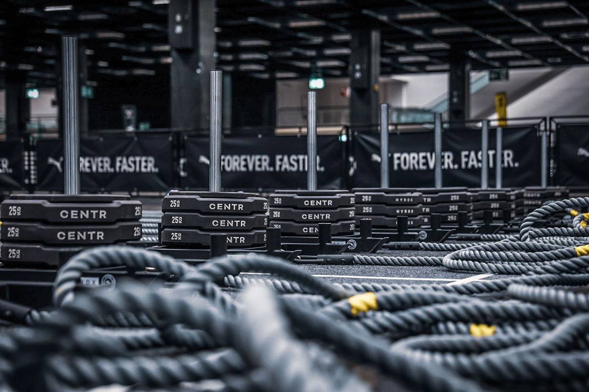

Zaterdag 22 augustus 2026
HYROX Simulatie Alkmaar
Een volledige HYROX race bij CrossFit Alkmaar. Open en Pro divisie. 8 rondes, 8 stations, 1 finish.
Een echte HYROX race, bij CrossFit Alkmaar
Op zaterdag 22 augustus organiseren we bij CrossFit Alkmaar een volledige HYROX Simulatie. Dezelfde opzet als een officiële HYROX wedstrijd: 8 rondes van 1 kilometer hardlopen, elk gevolgd door een functioneel station.
Bereid je voor op je eerste HYROX, test je race-strategie of verbeter je tijd. De simulatie is de perfecte manier om te ervaren wat een HYROX-race inhoudt — zonder naar een officieel evenement te hoeven reizen.
Iedereen is welkom, ook niet-leden. Je kunt individueel meedoen of als Doubles team, in de Open of Pro divisie.
De 8 HYROX-stations
Elk station wordt voorafgegaan door 1 kilometer hardlopen — totaal 8 km.
Praktische informatie
Datum & tijd
Zaterdag 22 augustus 2026
09:00 – 17:00 uur
Starttijden worden 3 dagen van tevoren bekendgemaakt
Locatie
CrossFit Alkmaar
Phoenixstraat 33
1812 PP Alkmaar
Kosten
CFA-leden: € 10,-
Niet-leden: € 30,-
Voor wie
Open en Pro divisie.
Individual of Doubles.
Iedereen welkom, ook niet-leden.
CrossFit Alkmaar is een officiële HYROX gym
Deze simulatie organiseren we als onderdeel van ons HYROX-programma.